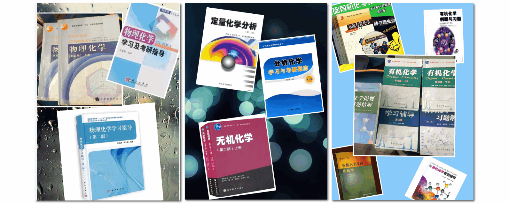

以下链接已经失效，请通过邮件联系获取。
本页面正在建设中，欢迎鹅群719154169（南开化院考研资料共享），需要您的维护！
支持本页面建设，您可以在相应页面下方评论或以邮件mchen19@163.com联系。
声明
页面上所有内容均整理自网络，版权归原作者所有，如有冒犯，请您联系删除。
历年研究生入学考试初试试题
综合化学
- 2005-2013年南开综合化学试题 KEY:
1pm6 - 2015年南开综合化学试题 KEY:
sr25 - 2005-2011年南开综合化学答案（sawnlin） KEY:
2m0k - 2017年南开综合化学试题（有机化学部分）含答案 KEY:
hp1g - 2018年南开综合化学试题（回忆版v20180413） KEY:
ntrt有待更新 - 2019年南开综合化学试题（回忆版v20181223）
见鹅群
无机化学
- 1999-2013年南开无机化学试题 KEY:
d9cl - 2005-2011年南开无机化学试题参考答案（仅供参考） KEY:
2u4i - 1999-2011年南开无机化学试题参考答案（手写版，仅供参考） KEY:
r6zr
分析化学
- 1999-2001年南开分析化学试题 KEY:
0457 - 2003-2013年南开分析化学试题 KEY:
qwhq - 2015年南开分析化学试题 KEY:
16o3 - 2016、2018年南开分析化学试题（回忆版，多版本）
见鹅群未整理
有机化学
- 1983-2016年南开有机化学试题（打印用） KEY:
h1e0最后更新：2019-01-12 - 2017年南开有机化学试题 KEY:
xez6 - 2018年南开有机化学试题（回忆版v20181210） KEY:
9cjl100/150分回忆版期待补充 - 2019年南开有机化学试题（回忆版v20181224） KEY:
见鹅群130/150分回忆版 - 2000-2009年南开有机化学试题参考答案
见《有机化学学习辅导（第二版）》 - 2010-2012、2017年南开有机化学试题参考答案 KEY:
wa1i - 2013年南开有机化学试题参考答案测试版 KEY:
orgchem2013 - 2014年南开有机化学试题参考答案测试版 KEY:
orc2020有错误请在评论区指正 - 2015年南开有机化学试题参考答案测试版
没有写，关闭 - 2016年南开有机化学试题参考答案测试版 KEY:
orc2020有错误请在评论区指正 - 2018年南开有机化学试题（回忆版）参考答案测试版 KEY:
暂时还没有写完，关闭 - 2019年南开有机化学试题（回忆版）参考答案测试版 KEY:
orc2020 暂时还没有写完
物理化学
- 2001-2004年南开物理化学试题 KEY:
fd7j - 2005-2012年南开物理化学试题 KEY:
zj3y - 2018年南开物理化学试题（回忆版） KEY:
189b
高分子化学与物理
- 1999-2000年、2005-2012年南开高分子化学与物理试题 KEY:
ey87其中2005-2010年含参考答案 - 2015年南开高分子化学与物理试题（回忆版） KEY:
184k - 2006-2012年南开高分子化学与物理试题参考答案（图片版） KEY:
n5lzby salmon95
参考书目及资料
综合化学
- 先这样凑合一下……http://muchong.com/t-10335941-1

分析化学
- 等待援助中……
- 定量分析化学 思考题答案
- 南开大学化学学院定量分析化学课件
有机化学
参考书目
- 王积涛. 有机化学（第三版. 上下册）[M]. 南开大学出版社, 2009. KEY:
0rzb豆瓣 - 张宝申等. 有机化学学习辅导（第二版）[M]. 南开大学出版社, 2010. 豆瓣
- 张宝申等. 有机化学习题解（第二版）[M]. 南开大学出版社, 2011. 豆瓣
王积涛有机化学(第三版)章后习题答案 - 邢其毅 裴伟伟 裴坚 徐瑞秋. 基础有机化学（第四版）[M]. 高等教育出版社, 2016. KEY:
gwnp - 裴坚. 基础有机化学习题解析（第四版）[M]. 高等教育出版社, 2017. KEY:
o9xq - 裴伟伟 冯骏材. 有机化学例题与习题——题解及水平测试 [M]. 高等教育出版社, 2002. KEY:
vfm4 - 邢其毅. 基础有机化学（第三版）[M]. 高等教育出版社, 2005. KEY:
2ky8 - 裴伟伟. 基础有机化学习题解析（第三版）[M]. 高等教育出版社, 2006. KEY:
tf8r - Jie Jack Li. Name Reactions: A Collection of … , 5th Edition[M]. Springer, 2013. KEY:
o8ly - Grossman. 有机反应机理的书写艺术. Art 翻译小组. 附答案 KEY:
csgu - Stuart Warren. 有机合成——切断法（原书第二版）. 药明康德 译. 科学出版社 KEY:
jj7l
其他相关
- 南开大学化学学院本科生有机化学试题 KEY:
jiy6 - 1986-2014年中国科学院大学有机化学试题（缺1991年） KEY:
0v7b更新日期：2019-01-01，后续更新~ - 【视频】清华大学 李艳梅 有机化学 B站 上册49讲 + 下册26讲 在线观看
- 【视频】北京大学 裴坚 中级有机化学 B站传送门
- 官能团转换/Functional Group Interconversion KEY:
sew2By Lin, Shrong-Shi(林崇熙)? - 【软件】ChemOffice Pro KEY:
8sre - 【软件】ReactionFlash - Version2.9.1(171).apk KEY:
ltq8人名反应速览Android版 - 【经验谈】2016南开大学有机化学考研经验分享：（献给那些迷茫中的学弟学妹们）
- 【经验谈】2018南开有机化学考研进阶攻略
- 【经验谈】工作6年复习半年考上京津冀地区985学硕经验贴
物理化学
- 【课件】南开大学物理化学课件 李悦2017 KEY:
0ivz
结构化学
- 结构化学基础（第4版）习题解析 KEY:
8m2e - 南开大学结构化学国家精品课 包含结构化学、分子模拟等相关课件与视频
- 【视频】南开大学孙宏伟公开课 B站传送门
复试试题及相关
- 【无机化学】2016年南开无机化学复试试题 KEY:
k8w6 - 【分析化学】2016年南开分析化学复试试题 KEY:
xzf0 - 【有机化学】有机化学复试程序及相关注意事项 KEY:
jzjx - 【有机化学】2010-2016年南开有机化学复试试题（缺2013年） KEY:
yj9i - 【有机化学】2018年南开有机化学复试试题 KEY:
mfi9 - 【有机化学】2019年南开有机化学复试试题 KEY:
gkr7 - 【物理化学】2013年南开物理化学复试试题 KEY:
jgyr - 【物理化学】2016年南开物理化学复试试题 KEY:
txkn - 【化学工程】2013-2015年南开化学学院工程硕士复试试题 KEY:
k689
信息汇总
- 南开大学2013年硕士研究生招生参考书目 KEY:
ac81 - 化学学院2019年自命题专业课考研大纲
- 南开大学2019年硕士招生专业目录及招生计划
百度云备份备份 - 南开大学2007年—2017年全日制硕士研究生报考录取人数统计表 KEY:
7x3b - 南开大学2015年—2019年全日制硕士研究生报考录取人数统计表 KEY:
ah4u - 南开大学化学院2018年初试分数排名 KEY:
t9c0 - 南开大学化学院2019年初试分数排名 KEY:
4iwl
各年考研录取概况（统考）
| 报考专业 | 报考 | 录取 | 备注 |
|---|---|---|---|
| 070301 (无机化学) | 61 | – | |
| 070302 (分析化学) | 49 | – | |
| 070303 (有机化学) | 238 | – | |
| 070304 (物理化学) | 75 | ||
| 070305 (高分子化学与物理) | 69 | ||
| 0703Z1 (化学生物学) | 3 | ||
| 0703Z2 (精细化学品化学) | 2 | ||
| 085600 (材料与化工) | 99 | ||
| 090401 (植物病理学) | 1 | ||
| 090402 (农业昆虫与害虫防治) | 2 | ||
| 090403 (农药学) | 2 | ||
| 095100 (农业) | 2 |
按分数排名得报考人数
| 报考专业 | 报考 | 录取 | 备注 |
|---|---|---|---|
| 无机化学 | 39 | 8+7(调剂) | 院内调剂 |
| 分析化学 | 42 | 6 | |
| 有机化学 | 182 | 40+4(调剂) | 院内调剂 |
| 物理化学 | 51 | 10 | |
| 高分子化学与物理 | 54 | 15 | |
| 化学生物学 | 10 | 1 | |
| 精细化学品化学 | 3 | 0 | |
| 化学工程 | 163 | 42 | |
| 植物病理学 | 1 | 1 | |
| 农业昆虫与害虫防治 | 1 | 农业0 | |
| 农药学 | 5 | 农业0 | |
| 农药 | 1 | 农业0 |
按分数排名得报考人数
| 报考专业 | 报考 | 录取 | 报录比 |
|---|---|---|---|
| 无机化学 | 51 | 10 | – |
| 分析化学 | 95 | 9 | 10.6 |
| 有机化学 | 152 | 39+1 | 3.8 |
| 物理化学 | 21 | 5 | – |
| 高分子化学与物理 | 32 | 11 | |
| 化学生物学 | 6 | ||
| 精细化学品化学 | 2 | ||
| 化学工程 | 111+3（非全） | 36 | |
| 农药学 | 4 |
按分数排名得报考人数
| 报考专业 | 报考 | 录取 | 报录比 |
|---|---|---|---|
| 无机化学 | 58 | 8 | |
| 分析化学 | 55 | 10 | |
| 有机化学 | 189 | 21 | |
| 化学生物学 | 4 | 0 | |
| 精细化学品化学 | 3 | 0 | |
| 农药学 | 2 | 0 | |
| 物理化学 | 40 | 6 | |
| 高分子化学与物理 | 68 | 6 | |
| 化学工程 | 95 | 46 |
来自官网数据
| 报考专业 | 报考 | 录取 | 报录比 |
|---|---|---|---|
| 无机化学 | 53 | 9 | |
| 分析化学 | 35 | 8 | |
| 有机化学 | 161 | 22 | |
| 化学生物学 | 12 | 1 | |
| 精细化学品化学 | 4 | 0 | |
| 农药学 | 3 | 1 | |
| 农业昆虫与害虫防治 | 1 | 0 | |
| 物理化学 | 38 | 8 | |
| 高分子化学与物理 | 82 | 11 | |
| 化学工程 | 80 | 44 |
来自官网数据
支持本页面 & 鸣谢
- 参与到资料、信息的共享便是您最直接的支持！ 欢迎在下方评论或邮件联系；
- 下侧支付宝扫码领红包